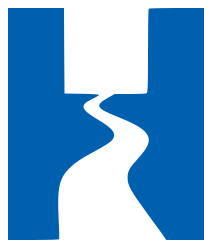

Hidroeng Projetos e Consultoria
Projetos de saneamento orientados à implantação, modernização e operação — do estudo técnico ao projeto executivo.
Identidade / Logotipo
Monograma "H" com traço de rio. Sempre com zona de proteção equivalente à altura da haste do H; nunca aplicar sobre fotos sem overlay escuro.
Negativo — fundos escuros (uso principal)
Positivo — fundos claros

Acento — aplicações especiais
Sistema de Cores
Paleta extraída do portfólio institucional: grafite-navy profundo como base, azul Hidroeng como acento de ação, cinzas frios de apoio.
#06101C · fundos, header, footer#0A1826 · texto, superfícies escuras#0060B0 · CTAs, links, destaques#F5F8FA · seções alternadas, cardsTipografia
Archivo para títulos (grotesca técnica, pesos 600–800) e Inter para corpo (400–600). Ambas via Google Fonts.
Display Archivo 800 · 56px · lh 1.1 | Hidroeng |
H1 Archivo 800 · 44px · lh 1.12 | Projetos de saneamento |
H2 Archivo 700 · 32px · lh 1.2 | Ciclo completo de água e esgoto |
H3 Archivo 700 · 22px · lh 1.3 | Sistemas de abastecimento de água |
H4 Archivo 600 · 18px | Estudos técnicos especializados |
Lead Inter 400 · 19px · lh 1.6 | Entrega integrada: do estudo técnico ao projeto executivo. |
Body Inter 400 · 16px · lh 1.65 | A atuação técnica combina hidráulica, implantação civil e requisitos operacionais. |
Body S Inter 400 · 14px | Menor risco técnico, maior previsibilidade de contratação. |
Overline Inter 700 · 12px · track .2em | Nossos serviços |
Caption Inter 400 · 12px | ETE com capacidade de 24 L/s — Santo Antônio de Goiás. |
Espaçamento
Escala base 4px. Seções usam space-20/space-24; componentes internos space-4 a space-8.
Sombras & Elevação
Sombras tintadas com navy (nunca preto puro). Sombra de acento reservada a CTAs.
Movimento & Transições
Passe o mouse para ver. Micro-interações usam fast/base; entradas de seção usam slow; destaques pontuais usam spring.
Botões
CTA principal sempre leva ao WhatsApp. Primary para ação principal (1 por viewport), navy em fundos claros, secondary/ghost para apoio.
Badges & Tags
Cards
Feature cards (claro e escuro) para serviços; project cards para cases técnicos.
Abastecimento de água
Captações, adutoras, reservatórios, elevatórias, tratamento e redes de distribuição.
Esgotamento sanitário
Redes coletoras, interceptores, elevatórias, linhas de recalque e ETEs.
Estudos técnicos
Estudos hidrológicos, transientes hidráulicos e modelagem hidráulica.
Menor risco técnico
Projetos compatíveis e prontos para contratação de obras.
Previsibilidade
Maior previsibilidade de contratação e execução.
Aderência à operação
Projetos mais aderentes à operação e manutenção.
ETE Santo Antônio de Goiás
Tratamento preliminar para ETE de 24 L/s com gradeamento, desarenador e medidor Parshall.
Ver caseSAA Vale do Sol — Caçu-GO
15,8 km de rede, 4,5 km de adutora, reservatório de 300 m³ e travessia sob rodovia.
Ver caseEEE Souza Caldas — Santo André-SP
Arranjo hidráulico e detalhamento completo para elevatória de 3 L/s.
Ver caseFormulários
Usados apenas em módulos internos (fornecedores/trabalhe conosco). CTA comercial é sempre botão de WhatsApp, nunca formulário.
Tabela Comparativa
| Etapa do empreendimento | Projeto genérico | Com a Hidroeng |
|---|---|---|
| Concepção | Estudo isolado da operação | Concepção integrada a hidráulica, civil e operação |
| Compatibilização | Retrabalho entre disciplinas | Disciplinas compatibilizadas desde o início |
| Contratação da obra | Aditivos e imprevisibilidade | Projetos claros e prontos para contratação |
| Operação | Ajustes pós-entrega | Projeto aderente à operação e manutenção |
FAQ / Acordeão
Estudos e projetos para implantação, ampliação e modernização de sistemas de saneamento: abastecimento de água, esgotamento sanitário, recursos hídricos e infraestrutura hidráulica.
Concessionárias, construtoras, gestores públicos e equipes responsáveis por obras de infraestrutura.
Entrega integrada: do estudo técnico ao projeto executivo, orientado à implantação, operação e manutenção.
Sediada em Goiânia/GO, com projetos desenvolvidos em Goiás e em outros estados, como São Paulo.
Steps / Etapas
Ciclo de trabalho da Hidroeng — da concepção ao suporte à operação.
Ícones
Estilo stroke 2px, temática de saneamento e engenharia. Hover = acento.
Hero Section Pattern
Projetos de saneamento orientados à implantação, modernização e operação
Estudos e projetos para infraestrutura de água e esgoto — do estudo técnico ao projeto executivo, para concessionárias, construtoras e gestores públicos.
Tokens CSS
/* Hidroeng — tokens principais */ --navy-950: #06101C; /* fundo escuro base */ --navy-900: #0A1826; /* primária / texto */ --navy-800: #10263B; /* superfícies escuras */ --blue-600: #0060B0; /* azul Hidroeng — acento/CTA */ --blue-400: #3D96E4; /* acento claro / hover dark */ --gray-50: #F5F8FA; /* seções claras alternadas */ --gray-500: #67788A; /* texto secundário */ --font-display: 'Archivo', sans-serif; --font-body: 'Inter', sans-serif; --gradient-accent: linear-gradient(120deg,#0060B0,#1478D2); --shadow-accent: 0 10px 30px rgba(0,96,176,.35); --transition-base: 250ms cubic-bezier(.4,0,.2,1);